Geographic Patterns
Indeed
This map shows the distribution of open software engineer (SDE) positions by state throughout the country from June 18th to July 17th, 2020. Data was scraped from Indeed. The total number of posted open SDE positions is 20,589, which is about 10 times more than posted open DS positions that we previously scraped from Indeed. Although artificial intelligence and machine learning are getting more and more popular in recent years, many companies and different fields of industries still have a lot more SDE job openings than DS positions.
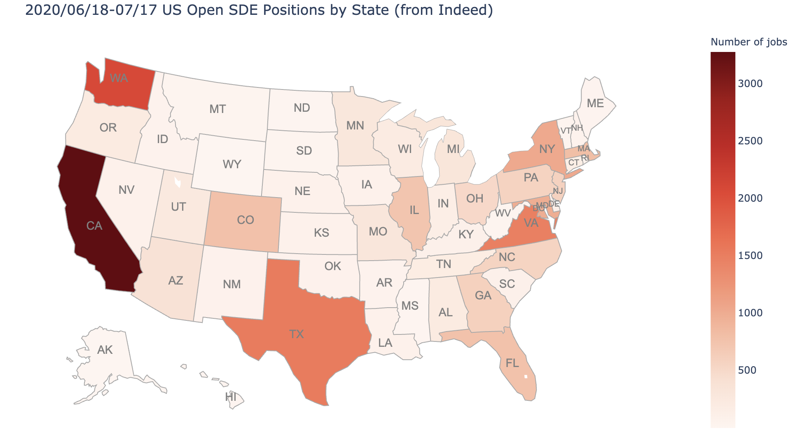The following figure shows the top 20 states that have the most open SDE positions throughout the country. As shown by the above map and the following figure, the state of California has the most open SDE positions (3,278), which is about 16% of total posted jobs. Among those posted SDE jobs in California, more than 60% are located in northern California. The major cities include San Francisco, San Jose, Sunnyvale and Mountain View, which are all in (or near) the well-known Silicon Valley. Despite the recent COVID-19 pandemic, many companies in Silicon Valley are still continuously hiring for SDE positions. The state of Washington (2,079) has the second most posted SDE jobs, followed by Texas (1,523), Virginia (1,469), New York (1,030) and Maryland (978). Although the headquarters of many big tech companies are located in Silicon Valley, many of them have started to establish new branches in other states, such as Texas, in recent years. Those new branches of big tech companies have boosted more and more job openings in other states. Due to the exceptionally high housing prices in the Bay Area, many people choose to “flee” the Bay Area and decide to settle down in other states where they can afford buying their own house.
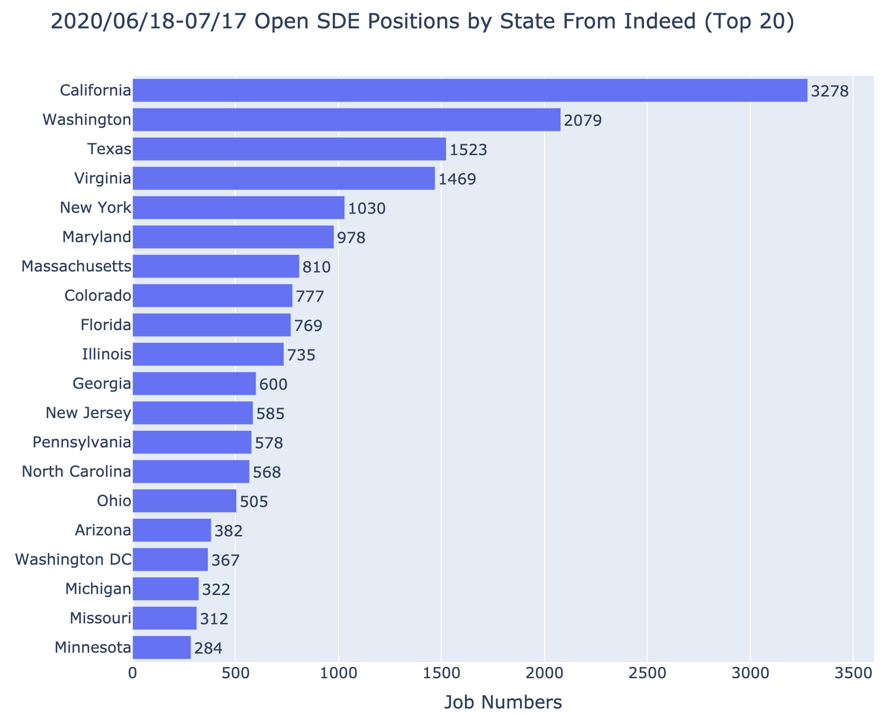The following figure shows the top 20 cities that have the most open SDE positions throughout the country. Opposed to our previous expectation, the city that has posted the most SDE jobs is not located in California, but is Seattle (1,254) which is located in the state of Washington. This is mainly because the headquarters of Amazon and Microsoft are in Seattle. Additionally, Facebook and Oracle both have branches in Seattle as well. Those companies are continuously hiring for SDE positions, and still have many openings despite the COVID-19 pandemic. New York City (709) has posted the second most SDE jobs, followed by Austin (519), Redmond (477) and Chicago (432). We notice that the headquarter of JP Morgan is in New York City, while it also has branches in Austin and Chicago. Besides tech companies, some financial companies including JP Morgan also have posted many open SDE positions.
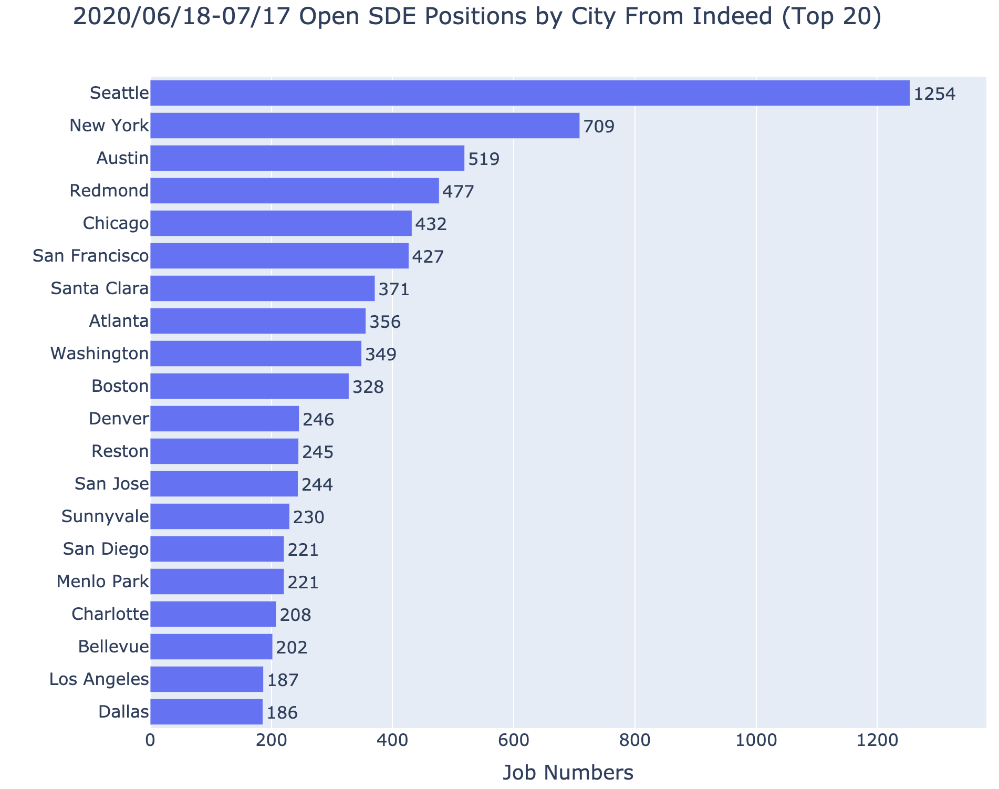The following figure shows the top 20 companies that have posted the most SDE jobs throughout the country. As we can see, Amazon (1,182) has posted the most SDE jobs, which explains why Seattle has the most open SDE positions among cities. Facebook (533) has posted the second most open SDE positions, followed by Microsoft (489), JP Morgan (458), Apple (315) and Oracle (271). Surprisingly, we find that Google ranks No.20 among companies, while in our expectation Google was supposed to post a lot more SDE positions. After some research, we find out that Google prefers to post job openings on its own website (Google Careers) instead of Indeed and LinkedIn. Therefore, for anyone who is looking for a SDE position at Google, it would be better to directly search for open jobs on Google Careers.
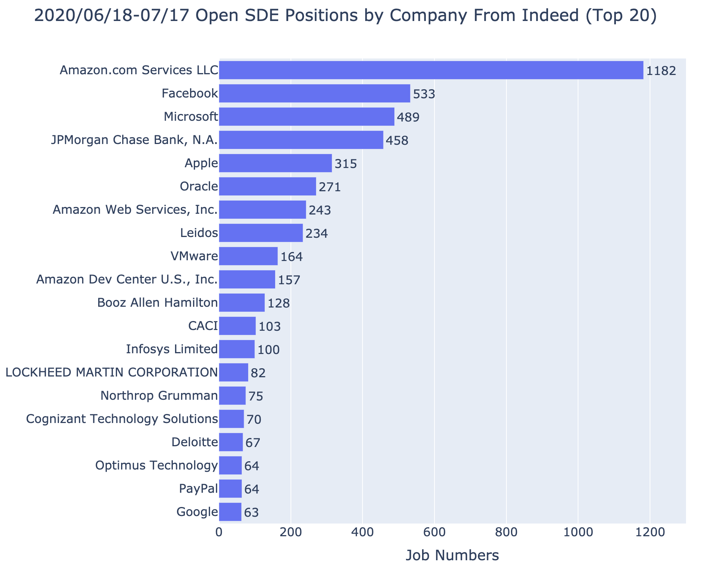This map shows the distribution of open SDE positions by state throughout the country from June 18th to July 17th, 2020. Data was scraped from LinkedIn. The total number of posted open SDE positions is 67,392, which is about 6 times more than posted open DS positions that we previously scraped from LinkedIn. Generally, the distribution of posted open SDE positions is similar to that from Indeed.
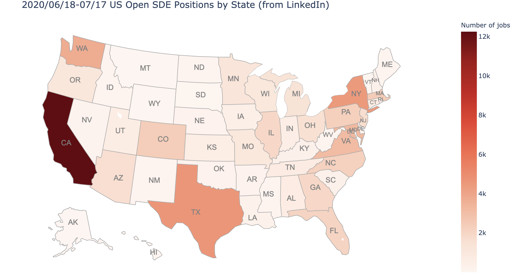This figure shows the ranking (Top 20) of the states that have posted the most open SDE positions from LinkedIn. Same as Indeed, the state of California (12,269) has posted the most open SDE positions, which accounts for about 18% of total posted jobs. Texas (4,631) has posted the second most SDE jobs, followed by New York (4,519), Washington (3,779), Maryland (3,243) and Virginia (3,144).
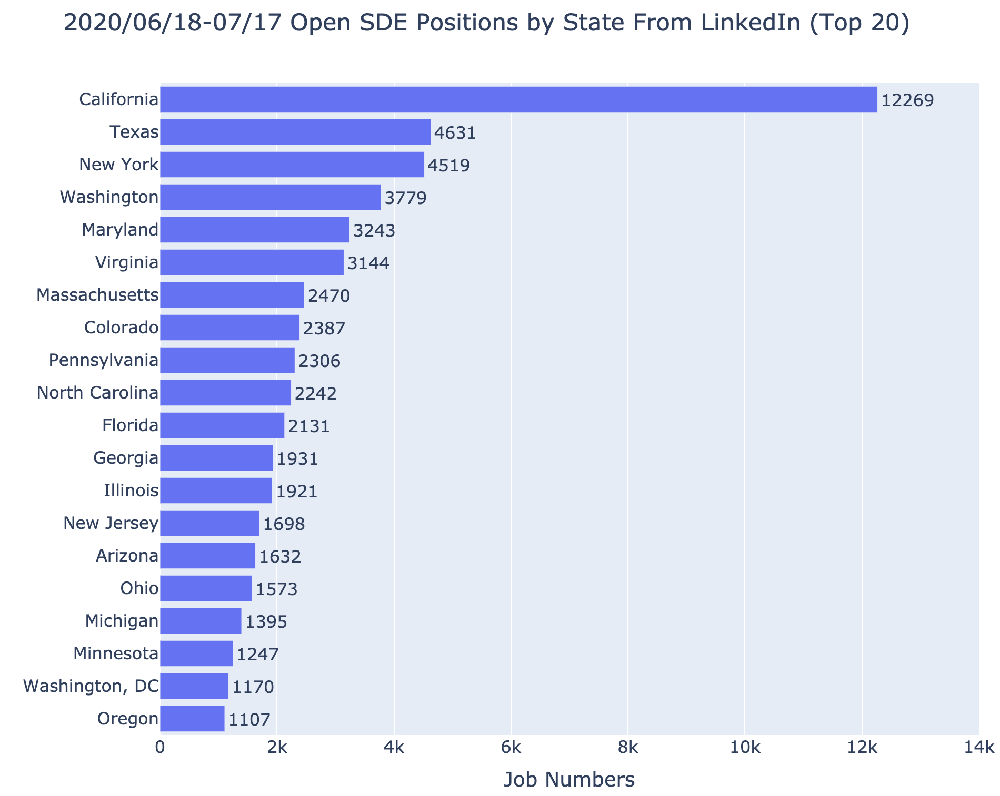The following figure shows the ranking (top 20) of the cities that have posted the most open SDE positions throughout the country. The city of New York (3,170) has posted the most open SDE positions among cities, which is different from the case of Indeed, where Seattle ranked in the first place. Seattle (2,666) is the city that has posted the second most open SDS positions from LinkedIn, followed by San Francisco (1,965), Austin (1,264), Atlanta (1,244) and Chicago (1,213).
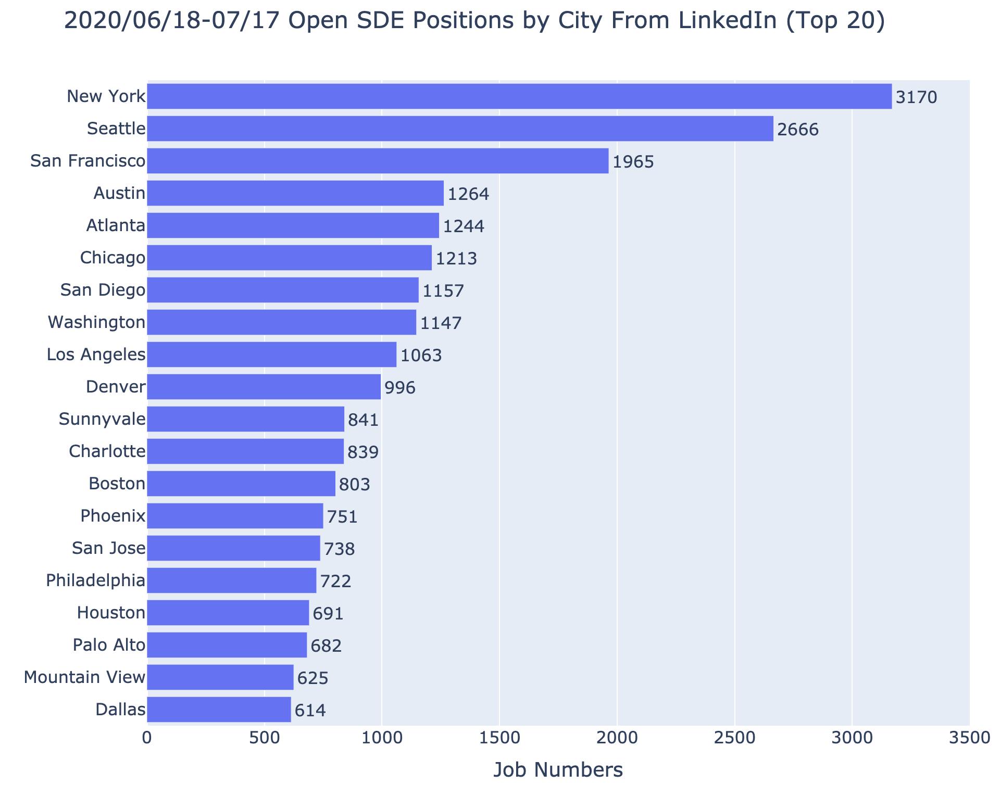The following figure shows the ranking (top 20) of companies that have posted the most open SDE positions throughout the country from LinkedIn. It is not surprising to find that Amazon (2,681) has posted the most open SDE positions among companies, and is about three times more than Raytheon Technologies (866), which ranks in second place. Open learning exchange (716) is in third place, followed by Perficient (694), Amazon Web Services (AWS) and JP Morgan Chase (498).
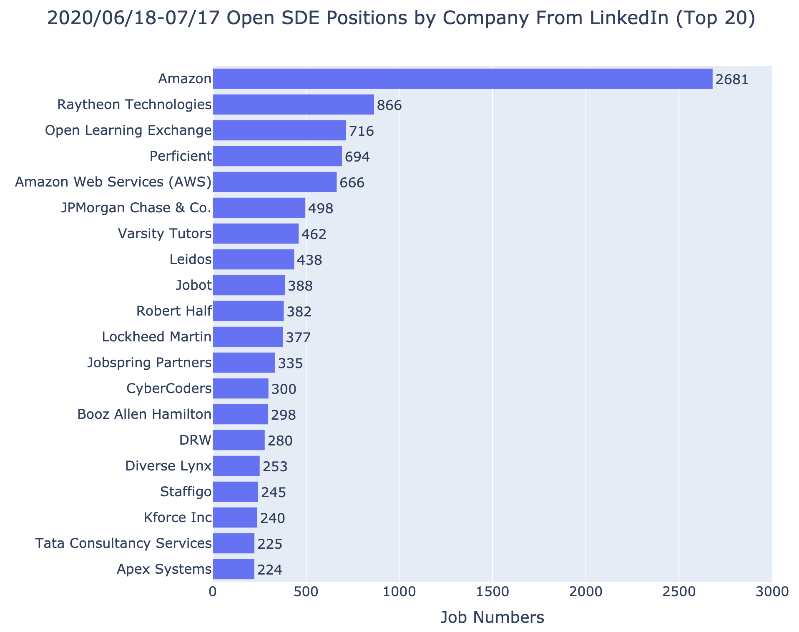Big Company Features
From the above facts from Indeed and LinkedIn websites, we can see that the top companies in the ranking of SDE positions released this month in United States include many outsourcing companies such as ClearanceJobs, Jobs Interviewing Now from HCS, Jobs Interviewing Now from MJH, ClearedJobs.Net, etc. Here we do not consider these companies. There are also many financial companies such as JPMorgan and Deloitte listed on the top ranks. For newly graduated job seekers, entry-level SDE positions in the financial industry are also a good choice in addition to large technology companies, but they are generally not recommended. The reason is mainly because in the financial industry these positions of SDE are serving other positions as supporting roles such as Quant. However, there are also relatively new technology financial companies, such as Robinhood, which is still worth recommending, because their SDE roles are still quite important. So here we still focus on Amazon (including AWS), Facebook, Apple, Microsoft, Google, and IBM for the SDE job analysis of large companies.
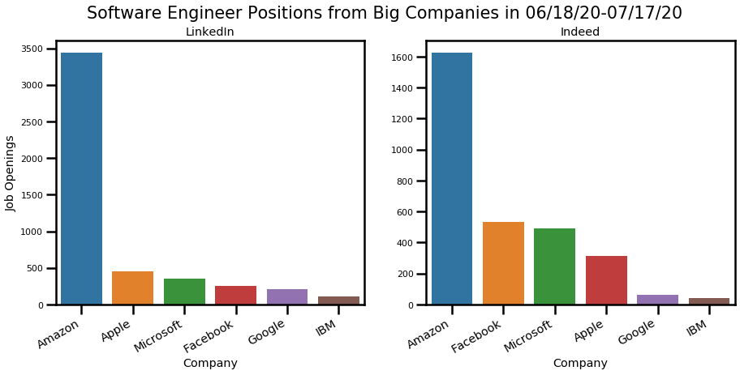In the above figure, we have summarized the SDE positions of large companies (including Amazon, Apple, Facebook, Google, IBM and Microsoft) crawled from LinkedIn and Indeed websites in the past month (from June 18 to July 17, 2020). The left panel shows a comparison of the number of positions among these large companies on the LinkedIn website, and the right panel shows the distribution of positions among the large companies on the Indeed website. It is obvious that Amazon dominates the two major websites, ranking first in number with 3436 and 1624 respectively. On LinkedIn, Apple (452), Microsoft (358), and Facebook (254) are ranked second, third, and fourth. In terms of posting numbers, although these numbers are not as many as Amazon, all of them are more than 200. In fact, the rankings on Indeed are slightly different from those on LinkedIn. The numbers of these three companies are Facebook (533), Microsoft (489), and Apple (315). It can be seen that Facebook and Microsoft publish more positions on Indeed. And Apple has more job openings on LinkedIn. In addition, we found that Google has a relatively small number of job postings on LinkedIn and Indeed, which may be due to Google’s tendency to post more positions on its official website. IBM has the least number on the two websites, and their demand for DS is obviously more than SDE.
Industry Fields
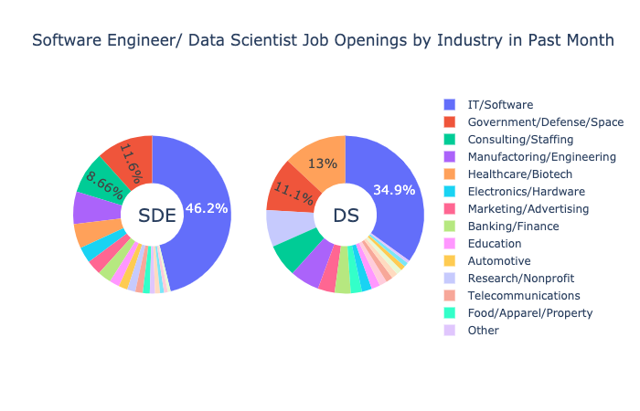In the above figure, we compare the distribution of job openings in software engineering and data science in various industry fields in the past month (from June 18 to July 17, 2020). Here we focus on the analysis of the industry fields of SDE in the left panel, and compare it with the distribution of DS in the right panel. Unsurprisingly, the IT industry's demand for SDE took the first place, accounted for the largest 46.2%, which is 11.3% more than the IT industry's demand for DS in the same period. The second place is government and military defense, accounting for 11.6% of all fields, which is not much different from DS in the same field. This shows that government departments have relatively more requirements for software applications, data analysis and management. The consulting industry also has a lot of demand for SDE, ranking third among all industries, accounting for 8.66%. The fourth place in the SDE industry analysis is engineering and manufacturing (6.64%). In fact, many machinery production needs the support of automated procedures, and this part of the work needs to be completed by coders. It is worth mentioning that the medical health and biopharmaceutical industry ranks fifth in SDE (5.02%), which is far lower than its 13% second place in DS. This shows that the massive data in the biomedical industry need data scientists to handle the analysis. In addition, we found that automation fields such as electronics and autonomous driving rank higher in SDE than DS, while research and non-profit organizations prefer data science. In general, the industries that require SDE and DS are spread across all walks of life. In addition to leading technology companies, we have many other options. In the process of job hunting, job seekers must conduct more research on the companies they invest in, and make appropriate choices based on their own interests and career plans.
Experience Level
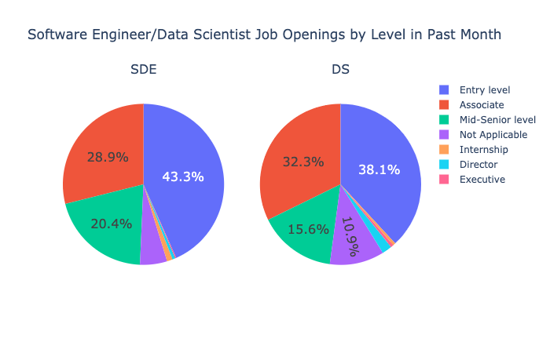Here we analyze and compare the position distribution of software engineering and data science in the past month (06/18/20-07/17/20). It is not difficult to find that whether it is SDE or DS, Entry level work is the most, accounting for 43.3% (SDE) and 38.1% (DS) of the total number respectively. In terms of quantity, there are much more SDE jobs published on LinkedIn than DS (close to 10:1), and the entry-level ratio is also higher. It also shows that SDE provides a large number of jobs for novices who are new to the workplace, and the threshold is relatively low. Data science is lower. Comparing the left and right pie charts, we find that the proportion of SDE Associate-level jobs is 28.9%, which is slightly lower than its proportion in DS Job Opening. On the whole, most of the work is concentrated on the three levels of Entry level, Associate, and Mid-Senior level. The proportion of Intern is also relatively small, which should be related to the impact of the epidemic today. Leadership-level positions are even rarer, so the majority of job seekers should be down-to-earth and start with basic positions.